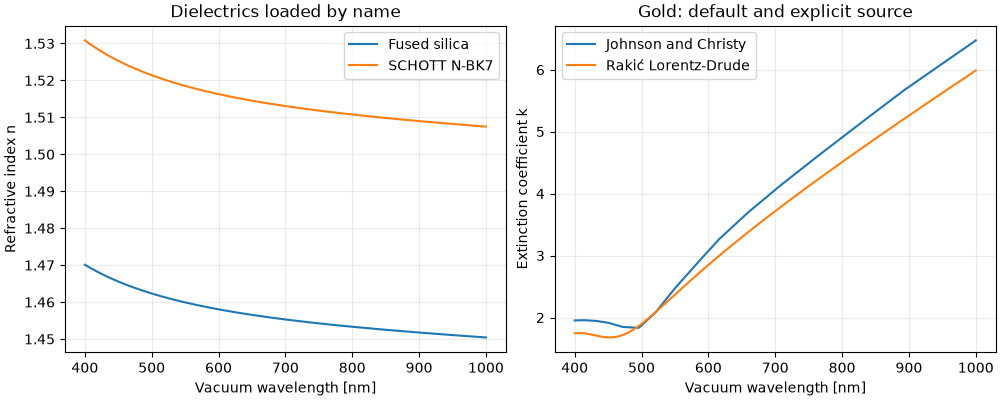

Note
Go to the end to download the full example code.
Load optical materials by common name#
Use chemical formulas or familiar names for a first calculation, inspect the documented source choices, and override them when another measurement is needed. Discovery still exposes every dataset and its canonical identity.
import matplotlib.pyplot as plt
import numpy as np
from TypedUnit import ureg
from PyOptik import AmbiguousMaterialError, find_materials, material
silica = material("SiO2") # main/SiO2/Malitson
gold = material("gold") # main/Au/Johnson
bk7 = material("N-BK7") # specs/SCHOTT-optical/N-BK7
water = material("water") # main/H2O/Hale
for model in (silica, gold, bk7, water):
print(model.catalog_id, model.nk(633 * ureg.nm, out_of_range="raise"))
main/SiO2/Malitson 1.4570121246412515
main/Au/Johnson (0.1834426229508196+3.433241217798595j)
specs/SCHOTT-optical/N-BK7 1.5150823520020043
main/H2O/Hale (1.33168+1.4700000000000006e-08j)
Source overrides bypass the documented default. Provenance remains visible.
alternative_gold = material("Au", source="Rakic-LD")
print("Selected alternative:", alternative_gold.catalog_id)
print("Original reference:", gold.provenance["reference"])
# Discovery always returns every matching page, including the default.
candidates = find_materials("Au")
print(f"Found {len(candidates)} gold datasets")
for page in candidates[:3]:
print(page.id.key, "—", page.description)
Selected alternative: main/Au/Rakic-LD
Original reference: P. B. Johnson and R. W. Christy.
Optical constants of the noble metals.
<a href="https://doi.org/10.1103/PhysRevB.6.4370"><i>Phys. Rev. B</i> <b>6</b>, 4370-4379 (1972)</a>
Found 38 gold datasets
main/Au/Babar — Babar and Weaver 2015: n,k 0.2066–12.40 µm
main/Au/Chen — Chen et al. 2025: n,k 0.210–0.600 µm
main/Au/Ciesielski — Ciesielski et al. 2018: Au/SiO2; n,k 0.191–20.9 µm
Disable defaults to require an explicit source for an ambiguous family.
try:
material("Au", use_default=False)
except AmbiguousMaterialError as error:
print(f"Explicit source required: {len(error.candidates)} candidates")
print('Select one with material("Au", source="Johnson")')
Explicit source required: 38 candidates
Select one with material("Au", source="Johnson")
wavelengths = np.linspace(400, 1000, 300) * ureg.nm
figure, axes = plt.subplots(1, 2, figsize=(10, 4), layout="constrained")
for label, model in [("Fused silica", silica), ("SCHOTT N-BK7", bk7)]:
axes[0].plot(wavelengths.magnitude, model.n(wavelengths, out_of_range="raise"), label=label)
axes[0].set(xlabel="Vacuum wavelength [nm]", ylabel="Refractive index n",
title="Dielectrics loaded by name")
for label, model in [("Johnson and Christy", gold), ("Rakić Lorentz-Drude", alternative_gold)]:
axes[1].plot(wavelengths.magnitude, model.k(wavelengths, out_of_range="raise"), label=label)
axes[1].set(xlabel="Vacuum wavelength [nm]", ylabel="Extinction coefficient k",
title="Gold: default and explicit source")
for axis in axes:
axis.grid(alpha=0.25)
axis.legend()
plt.show()

Total running time of the script: (0 minutes 7.594 seconds)